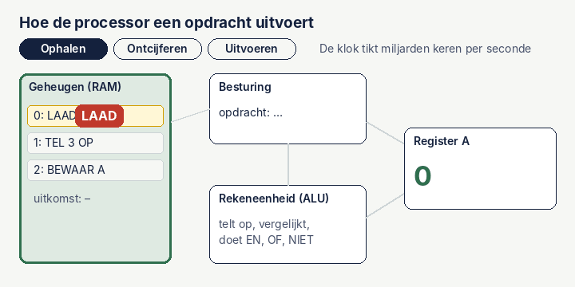

Van schakelaar tot processor: hoe je laptop rekent
Je laptop kan video's afspelen, kaarten tekenen en puntenwolken draaien. Toch kent hij maar twee dingen: aan en uit, 1 en 0. Hoe kom je van zo'n simpele schakelaar tot een processor? In vier stappen: schakelaar, poort, rekenen, processor.
1. De schakelaar: de transistor
Een transistor is een piepklein schakelaartje zonder bewegende delen. Zet je er een klein stroompje op, dan laat hij stroom door. Zonder dat stroompje niet. Stroom betekent 1, geen stroom betekent 0.
Een moderne laptopchip heeft er tientallen miljarden van, elk maar een paar nanometer groot. Duizenden keren kleiner dan de dikte van een haar.
2. Logische poorten: schakelaars die beslissen
Zet je een paar transistors slim bij elkaar, dan krijg je een logische poort. Een poort kijkt naar één of twee ingangen en zet de uitgang op 1 of 0 volgens een vaste regel. Klik hieronder op A en B om ze aan en uit te zetten.
De NAND-poort is bijzonder: alleen met NAND-poorten kun je élke andere poort bouwen, en dus een hele computer. Een NOT-poort is in een chip twee transistors, een NAND-poort vier.
3. Van poorten naar rekenen
Computers rekenen in het tweetallige stelsel: niet met tientallen, maar met tweetallen. Elke plek is twee keer zoveel waard als de plek rechts ervan: 1, 2, 4, 8. Het getal 6 is dus 0110: een 4 en een 2.
Optellen gaat net als op de basisschool: per kolom, met een onthouden getal. 1 + 1 is in het tweetallige stelsel 10: je schrijft 0 op en onthoudt 1. Kijk nog eens naar de poorten: de XOR geeft precies de 0 die je opschrijft, en de AND het getal dat je onthoudt. Twee poorten, en je kunt optellen.
Zet hieronder de bits aan en uit. De rekenmachine bestaat uit vier van die optel-blokjes naast elkaar.
waarde per plek: 16 · 8 · 4 · 2 · 1
Met hetzelfde idee bouw je ook aftrekken, vergelijken en vermenigvuldigen. Samen heet dat de rekeneenheid, of ALU (Arithmetic Logic Unit).
4. De processor: ophalen, ontcijferen, uitvoeren
Een processor doet eigenlijk steeds hetzelfde rondje, miljarden keren per seconde:
- Ophalen: de volgende opdracht uit het geheugen halen.
- Ontcijferen: de besturing kijkt wat er moet gebeuren en zet de juiste poorten open.
- Uitvoeren: de rekeneenheid rekent, en het resultaat gaat naar een register, een klein geheugenplekje in de processor zelf.

Het tempo wordt bepaald door de klok. Een processor van 3 GHz tikt drie miljard keer per seconde. In de tijd van één tik legt licht maar 10 centimeter af. Daarom zitten de onderdelen van een chip zo dicht op elkaar.
Wat zit er nog meer in je laptop?
De processor is snel, maar heeft weinig ruimte. Daarom werkt een laptop met lagen geheugen: hoe dichter bij de processor, hoe sneller en hoe kleiner. Zie het als een werkplaats.
| Onderdeel | Vergelijk het met | Hoe snel, ruwweg | Als één tik 1 seconde was |
|---|---|---|---|
| Registers | Wat je in je handen hebt | 1 kloktik | 1 seconde |
| Cache | Je bureau | 1 tot 20 nanoseconden | een paar seconden tot een minuut |
| Werkgeheugen (RAM) | De kast in de kamer | zo'n 100 nanoseconden | ongeveer 5 minuten |
| SSD | Het archief in de kelder | zo'n 100 microseconden | ongeveer 3 dagen |
Een laptop heeft ook meerdere kernen: meerdere processors op één chip die tegelijk aan verschillende taken werken. En er zit een grafische processor (GPU) in, met duizenden kleine, simpele kernen die allemaal tegelijk hetzelfde trucje doen.
Waarom dit voor mijn werk uitmaakt
Een puntenwolk van honderden miljoenen punten past niet zomaar in het werkgeheugen, en dan moet de laptop steeds naar de SSD. Dat is het verschil tussen een paar minuten en een paar uur wachten. Daarom werken programma's voor puntenwolken met tegels en detailniveaus, en laten ze zwaar werk vaak door de GPU doen: duizenden punten tegelijk verschuiven is precies waar die goed in is.
Hetzelfde zie je bij Python: een lus die punt voor punt rekent is traag, terwijl NumPy hele reeksen in één keer naar de processor stuurt. Dat scheelt vaak een factor honderd.
Om verder te lezen: Charles Petzold, Code: The Hidden Language of Computer Hardware and Software; Noam Nisan en Shimon Schocken, The Elements of Computing Systems (het project Nand2Tetris), waarin je van NAND-poorten tot een werkende computer bouwt. De gif en de interactieve poorten zijn van mij.